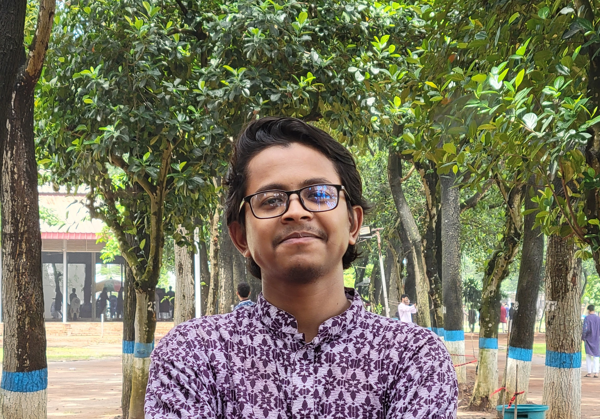

|

|
Iftekhar Uddin Tuhin
Web Developer
|
Summary
Motivated Electrical and Electronic Engineering undergraduate at BRAC University, seeking
opportunities to apply my academic knowledge and programming skills in real-world projects.
Passionate about innovation, problem-solving, and contributing to technological advancement.
Eager to engage in projects that leverage technical expertise and drive impactful results.
Education
BRAC UNIVERSITY
- Bachelor's of Electrical and Electronic Engineering
GOVT. SCIENCE COLLEGE
Experience
Event Management | BracU
- Collaborated with other departments such as catering or event management to
ensure smooth operations.
Event Volunteer| BracU
- Collaborated with marketing team to launch promotional campaigns for events.
- Coordinated with security personnel to ensure safety of all attendees and participants.
Projects | BracU
- Collaborated with teams to achieve project goals and resolve issues.
- Performed system analysis and testing to identify and rectify technical inefficiencies.
Skills
- Programming: Python, C and MATLAB
- Web development: HTML
- Design tools: Canva
- Office tools: Microsoft Word, Excel,PowerPoint
More About Me
Portfolio
Check out my work and projects here:
My Portfolio